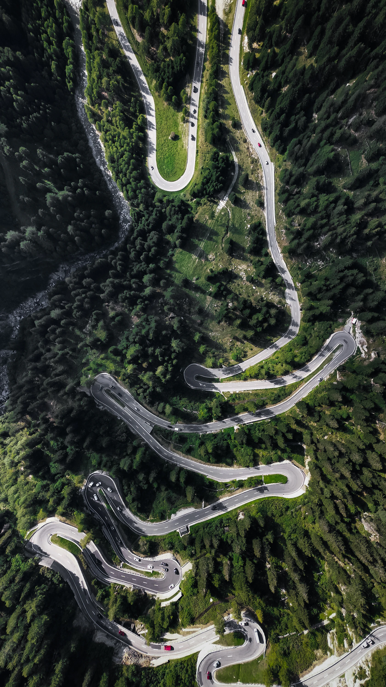
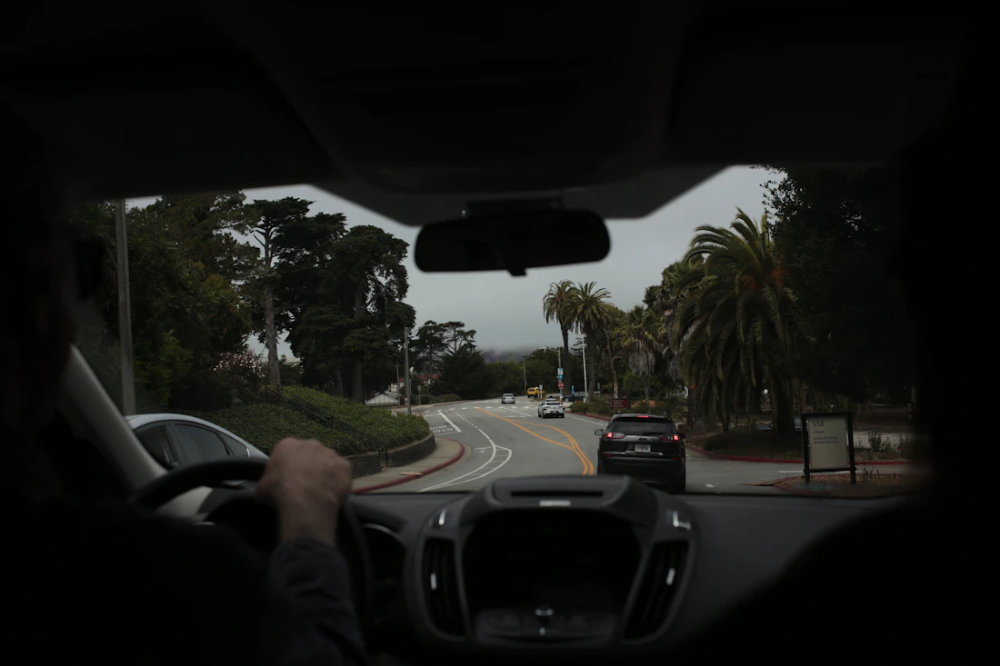

Междугороднее такси
Из города в город
Укажите, откуда и куда хотите поехать. Добавьте дату и число пассажиров, чтобы согласовать поездку.

Примеры маршрутов
Выберите маршрут, чтобы подставить города в форму.
Как заказать поездку
- 01
Укажите маршрут
Откуда забрать, куда ехать и на какую дату планируете поездку.
- 02
Согласуйте детали
Заранее уточните адрес подачи, время и стоимость.
- 03
Подготовьтесь к выезду
Сообщите о багаже, детском кресле или других пожеланиях при заказе.

О чём договориться до выезда
Если едете в аэропорт или на вокзал, сообщите время вылета или отправления. Это поможет согласовать подачу с учётом дороги.
Перейти к маршрутуЧастые вопросы
Можно ли указать свой маршрут?
Да. Поля «Откуда» и «Куда» можно заполнить вручную.
Как узнать стоимость?
Для расчёта нужны маршрут, дата и детали поездки. В демонстрации тарифы не указаны.
Что делать, если нужен заезд по пути?
Укажите промежуточную остановку в комментарии. В рабочей версии её можно будет согласовать с диспетчером.